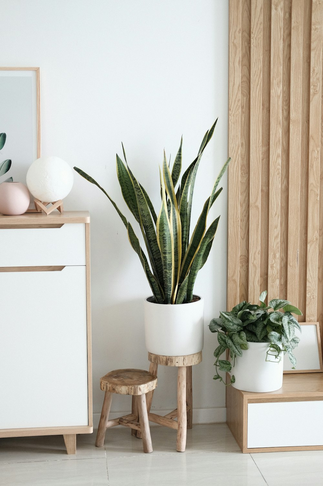

衣服上的污渍，是最容易让人崩溃的家务之一。白衬衫领口的黄渍、孩子校服上的油点、吃饭溅到的红酒、还有怎么洗都发灰的汗渍——明明才穿几次，看着却像旧了好几年。
其实，绝大多数污渍都能在家处理干净，关键是方法要对。今天整理一份衣服顽固污渍去除指南，把最常见的几种污渍和对应的处理办法一次说清，照着做，衣服能多穿好几年。

一、动手前，先记住 3 个黄金原则
在急着搓洗之前，先把这三条记牢，能少走很多弯路：
- 越快处理越好。污渍刚沾上时是最好清理的，等它干了、氧化了、甚至被熨斗一烫定型，难度会翻倍。
- 先看水洗标。羊毛、真丝、羽绒这类娇贵面料，很多污渍不能用力搓，也不能用热水，先确认面料再下手。
- 先在隐蔽处试一下。不管是酒精、白醋还是去渍剂，先在衣角内侧、接缝处试一小块，确认不褪色、不伤面料再大面积用。
小提醒：处理污渍时，尽量从污渍背面（反面）往上推、往上冲，能让污渍往外走，而不是越擦越往纤维里钻。
二、8 种常见污渍，对症处理
下面按出现频率，把最让人头疼的几种污渍逐一说清楚。
1. 油渍：用洗洁精或面粉吸附
油渍最怕「干处理」。刚沾上别急着下水：
- 在油渍正反两面涂上一点洗洁精，轻轻揉开，静置 10 分钟再正常洗；
- 要是身边没有洗洁精，撒一层面粉或玉米淀粉，吸附半小时，刷掉再洗；
- 陈旧油渍可以涂一点汽油或酒精（真丝羊毛慎用），再用洗洁精洗掉。
2. 血渍：一定要用冷水
血渍遇热会凝固在纤维里，永远洗不掉，所以全程冷水是铁律：
- 用冷水泡 30 分钟，加一点盐搓洗；
- 顽固的用过氧化氢（双氧水）点涂，停留几分钟冲净；
- 床单、内裤上的干血渍，先敷一层肥皂再冷水搓。
3. 汗渍和领口发黄：白醋加小苏打
夏天的白T、衬衫领口最容易发黄，是汗里的蛋白质和盐分氧化造成的：
- 温水里加白醋浸泡 1 小时，再正常洗；
- 发黄严重的地方，用小苏打调成糊状敷 20 分钟再洗；
- 柠檬汁加阳光暴晒，对白色棉麻有天然增白效果。
4. 红酒渍：盐或白酒救急
红酒渍一旦干透就很难办，关键是当场处理：
- 立刻撒一层食盐吸住酒液，再用冷水冲；
- 也可以用白葡萄酒倒在红渍上中和，再用洗衣液洗；
- 已经干了的，用甘油或洗洁精预处理后冷水搓。
5. 咖啡和茶渍：沸水冲，别用肥皂
刚沾上的咖啡茶渍，用沸水从背面冲（前提是面料耐热），往往能直接冲掉；陈旧的用甘油或含酶洗衣液泡一泡再洗。注意别用肥皂，肥皂和鞣酸结合反而会更牢。
6. 口红和粉底：酒精或卸妆油
化妆品渍含油脂，普通水洗不掉：
- 用卸妆油或婴儿油先溶解，再用洗洁精洗；
- 顽固的用棉签蘸酒精点涂，注意先在不显眼处试色牢度。
7. 圆珠笔油：酒精或发胶
笔油是油性的，用酒精、风油精或发胶喷在污渍上，静置几分钟，再用洗衣液搓洗，一般能淡化到看不见。
8. 水果和果汁：热水加酵素
新鲜果汁用冷水冲即可；如果是芒果、番茄这类带色素的，用含酶洗衣液温水泡，再用沸水从背面冲（耐热面料）。

三、一张速查表，贴衣柜上
把下面这张表存进手机，或打印贴衣柜，下次沾到污渍不用再翻文章：
| 污渍类型 | 首选处理 | 关键注意 |
|---|---|---|
| 油渍 | 洗洁精干涂静置 | 别先下水 |
| 血渍 | 冷水 + 盐 | 严禁热水 |
| 汗渍发黄 | 白醋 / 小苏打 | 白色棉麻适用 |
| 红酒渍 | 食盐吸附 | 当场处理 |
| 咖啡茶渍 | 沸水反面冲 | 忌用肥皂 |
| 口红粉底 | 卸妆油溶解 | 先试色牢度 |
| 圆珠笔油 | 酒精 / 风油精 | 耐心点涂 |
| 果汁 | 含酶洗衣液温水泡 | 色素类趁早 |
四、洗后护理，避免二次翻车
污渍去掉了，洗护也要跟上，否则容易越洗越旧：
- 深浅分开洗，新买的深色衣服前三次单独洗，防掉色染花别的；
- 反面晾晒，减少阳光直射导致的发灰和变形；
- 及时收衣，长时间暴晒会让弹性纤维变脆；
- 顽固污渍别用漂白水硬怼，漂坏了比脏了更可惜，优先用含酶产品。
真正会洗衣的人，不是衣服不脏，而是脏了知道怎么救。掌握这几招，衣柜里的「半旧衣」能少一大半。
写在最后
衣服的寿命，很多时候不是穿坏的，是洗坏的、污渍没及时处理的。今天这份指南，不需要你买多贵的去渍产品，厨房里的白醋、小苏打、盐、洗洁精，加上一点耐心，就够应付九成以上的日常污渍。
下次再沾到油点、血渍、红酒，别急着叹气，也别一股脑丢进洗衣机。停下来，看一眼这张表，对症处理——你会发现，原来「救活一件衣服」这么简单 🌸
💬 留言区